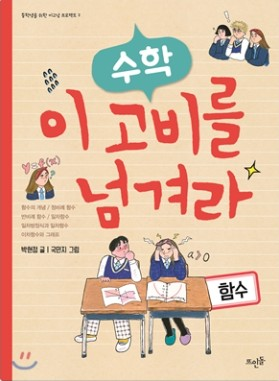

MATHDOING CENTER
아이마다 생각의 결이 다릅니다.
매쓰두잉 센터는 그 결을 따라 잠재력을 실력으로 꽃피웁니다.
신규 오픈 기념
오픈 기념 연산 진단 이벤트
아이의 연산 실수, 단순한 부주의가 아닐 수 있습니다.
매쓰두잉 센터는 신규 오픈을 기념하여 6월 15일부터 6월 19일까지, 주 5일간 연산 능력 평가와 오류 원인 분석을 진행합니다.
이번 진단은 단순히 정답과 오답을 확인하는 평가가 아닙니다. 아이가 왜 반복적으로 연산에서 실수하는지, 어떤 사고 과정에서 오류가 발생하는지 살펴보고, 가정과 수업에서 활용할 수 있는 맞춤형 학습 처방전을 제공합니다.
- 01연산 능력 평가
- 02연산 오류 유형 분석
- 03오류 원인별 학습 처방전 제공
Analysis Focus
연산 오류 원인 6가지
기본 연산을 빠르고 안정적으로 떠올리는 유창성이 충분한지 살핍니다.
계산 절차를 유지하고 순서대로 처리하는 과정에서 생기는 부담을 확인합니다.
속도 요구나 긴장감이 정확도와 풀이 지속성에 미치는 영향을 봅니다.
수, 식, 문장, 그림 사이를 옮겨 이해하는 과정의 흔들림을 점검합니다.
반복된 결함 알고리즘이 특정 유형의 오답으로 굳어졌는지 분석합니다.
생각의 흔적을 남기는 방식이 오류 발견과 수정에 충분한지 확인합니다.
아이의 연산 오류는 단순히 “덜 풀어서” 생기는 문제가 아닐 수 있습니다. 매쓰두잉 센터는 아이의 풀이 과정과 오류 패턴을 살펴보고, 현재 아이에게 필요한 지도 방향을 구체적으로 제안합니다.
정답보다 먼저, 아이의 내면을 봅니다.
모두가 같은 100점을 향해 달릴 때, 매쓰두잉 센터는 먼저 아이가 세상을 바라보는 방식과 사고의 흐름을 관찰합니다. 수학교육의 본질은 문제를 맞히는 기술이 아니라 합리적으로 생각하는 힘을 기르는 일이라고 믿기 때문입니다.


지식을 주입하지 않고 잠재력을 발견하게 합니다.
아이마다 사고의 특색은 다릅니다. 매쓰두잉 센터는 일방적인 설명 대신, 학생이 가진 사고의 잠재력을 스스로 발견하고 실제 능력으로 발달시킬 수 있도록 정교하게 설계된 교육 환경을 제공합니다.
수학을 통해 사고의 근육을 키웁니다.
수학을 공부하는 것은 곧 합리적으로 생각하는 법을 배우는 일입니다. 매쓰두잉 센터에서 아이들은 발달 단계에 맞는 탐구를 통해 수학적 즐거움을 경험하며 단단한 사고의 근육을 키워갑니다.

센터장님의 저서
3-6학년 1, 2학기 전 과정을 담은 수학문제 해결을 위한 완벽한 전략서


Education Philosophy
매쓰두잉 센터는 영어 문장을 그대로 옮긴 말이 아니라, 수학을 설명으로 끝내지 않고 직접 이해하고, 그리고, 해결하고, 검토하게 하는 학습 철학의 이름입니다.
매쓰두잉 센터는 아이가 가진 고유한 사고의 결을 존중합니다. 그래서 수업은 누군가의 속도를 따라가는 구조가 아니라, 각자의 발달 단계에서 가장 의미 있는 질문을 만나도록 설계됩니다.
우리의 목표는 단기 점수 향상이 아니라, 아이가 스스로 생각하고 문제를 해결하는 실제적 능력을 갖추는 것입니다. 그 힘이 결국 학습 전체를 지탱하는 가장 단단한 기초가 됩니다.
MATHDOING CENTER
정밀 진단과 비계 설정
근접발달영역을 바탕으로 현재 수준과 잠재 수준 사이를 진단하고, 다음 단계로 스스로 넘어갈 수 있는 맞춤형 비계를 제공합니다.

스스로 발견하는 수학
현실의 문제를 수학적으로 조직화하는 수학화 과정을 직접 경험하며, 구체에서 추상으로 나아가는 발생적 학습을 만듭니다.

주도적인 학습 상황
교사가 답을 주기보다 학생이 가설을 세우고 검증하도록 설계해, 학습의 주도권과 자기주도적 문제 해결 능력을 키웁니다.

사고의 도구화
문제해결 전략과 알파·베타 공책을 통해 사고 과정을 기록하고 분석하며, 메타인지를 강화해 실제 능력으로 연결합니다.
Learning Diagnosis
정확한 진단에서 시작하는 맞춤 수학
아이에게 맞는 수업은 정확한 이해에서 시작됩니다. 매쓰두잉 센터는 학부모 설문, 학생 설문, 수학능력 진단을 함께 분석하여 현재 수준과 학습 특성, 다음 단계로 넘어가기 위한 비계를 설계합니다.
Step 01
기본 정보 수집
- 학부모 설문 (P1~P12): 학습 이력 파악
- 학생 설문 (S1~S10): 정보인식 유형 + 구체성
- 수학능력 진단 (M): 객관적 성취도
- 학부모 설문 (P1~P12): 학습 이력 파악
- 학생 설문 (S1~S10): 정보인식 유형 + 구체성
- 수학능력 진단 (M): 객관적 성취도
- P1~P6: 학습 이력 정리
- P7~P10: 부모 관찰 → 학생 설문과 비교
- P11~P12: 부모 고민 → 지도 방향 파악
- 학습 단계 (Stage 1~4)
- 정보인식 유형 (V/L/혼합)
- 구체성 수준
- 부모 관찰과 학생 설문 불일치 검토
- 부모 고민을 반영한 교재 난이도 조정
- 지도 방향 및 전략 수립
- 최종 교재 선정
- 7~8주 학습 계획
- 맞춤형 지도 전략
4대
교육 이론
ZPD
정밀 진단 기반 설계
Alpha-Beta
사고 기록과 메타인지

매쓰두잉 센터 교육 시스템
4대 교육 이론 기반 사고력 메커니즘
Vygotsky's ZPD
현 수준과 잠재 수준 사이를 정확히 진단해, 아이에게 가장 적절한 다음 단계를 설계합니다.
Scaffolding
적절한 힌트와 학습 양식에 맞는 교재를 제공해 스스로 성취감을 경험하도록 돕습니다.
Mathematization
완성된 공식을 외우는 대신 현실의 문제를 수학적으로 조직하는 과정을 직접 경험합니다.
Horizontal to Vertical
구체적인 경험에서 추상 개념으로 나아가는 수평적·수직적 성장을 발생적으로 이끕니다.
Brousseau's TDS
교사가 답을 설명하는 대신 학생이 교재와 상호작용하며 가설을 세우고 검증하는 상황을 제공합니다.
Transfer of Responsibility
학습의 주도권을 학생에게 돌려주어 자기주도적 문제 해결 능력을 실제 습관으로 만듭니다.
Problem Solving
전략을 내면화하도록 도우며, 문제를 해결하는 과정 자체를 학습의 중심에 둡니다.
Alpha-Beta Note
사고 과정을 기록하고 분석하는 특화 노트로 메타인지를 강화해, 어떤 난관도 스스로 돌파할 수 있는 능력을 완성합니다.
균형 있는 성장
네 가지 이론은 분절된 기술이 아니라 연결된 체계로 작동하며, 학생의 사고 능력을 균형 있게 발달시킵니다.
Thinking first
사고의 잠재력을 실력으로 연결하는 매쓰두잉 센터의 약속
학부모가 이해하는 성장 리포트
아이의 강점, 학습 태도, 다음 단계까지 명확하게 전달합니다. 매쓰두잉 센터는 아이의 성장을 수업 안에서만 끝내지 않고, 가정과 연결된 언어로 설명합니다.
매쓰두잉 센터가 전달하는 신뢰
전문적인 연구 기반 수업이 학부모에게는 분명한 안심이 됩니다.
아이가 어디에서 막히고 무엇을 이해했는지 구체적으로 설명받을 수 있어 가정에서도 훨씬 안정적으로 도와줄 수 있습니다.
답을 알려주는 수업이 아니라 아이가 생각을 만들어가는 과정이 보여서, 공부의 밀도가 다르다는 느낌을 받게 됩니다.
사고 과정을 기록하고 설명하는 습관이 생기면서, 한 문제를 넘어 스스로 돌파하는 힘이 자라고 있다는 점이 가장 인상적입니다.
매쓰두잉 센터장
수학 교육 프로그램 개발
대교연구소, CBS 문화센터, 이화여대 중등 영재원에서 수학 교육 프로그램을 개발해 왔습니다.
대학 강의 및 교육 연구
현재 대학 수학과와 교육대학원에서 강의하며, 학생의 잠재력을 실제 수학 능력으로 연결하는 교육을 연구하고 있습니다.
주요 저서
- 『누나는 수다쟁이 수학자 1·2·3』
- 『신비숲으로 날아간 수학』
- 『0의 비밀 화원』
- 『나의 첫 수학 놀이』 등



매쓰두잉 센터의 방향
매쓰두잉 센터는 단순한 문제 풀이를 넘어, 아이들의 이해력, 사고력, 성장 가능성을 함께 키우는 수학 교수학습센터입니다.
상담 예약
아이의 사고 특성을 함께 읽고, 가장 적합한 출발점을 제안합니다.